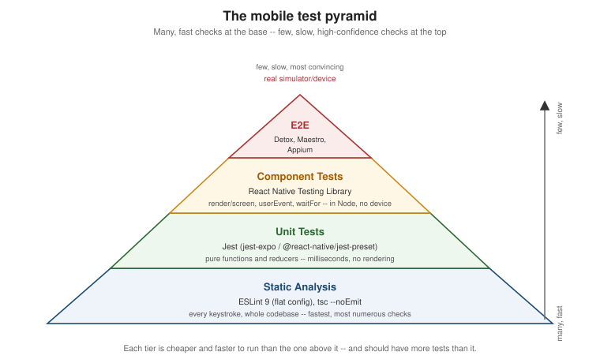

Testing
|
This content was generated with the assistance of AI and should be verified against the official documentation before being relied on in production. |
Every earlier page in this section built one piece of Places; this page covers how each piece gets verified.
State Management introduced the favourites reducer and
Text Input and Forms introduced AddPlaceScreen, and both are
reused verbatim below as the subject of a real test rather than a toy example — a unit test for the reducer, a
React Native Testing Library test for the form, and a Detox flow plus a Maestro flow that exercise the same "add
a place" journey end-to-end. The goal throughout is the same one behind every test pyramid: catch the cheapest
mistakes with the cheapest, fastest checks, and reserve the slow, flaky, full-app checks for the handful of
journeys that actually need one.
The Mobile Test Pyramid

The pyramid’s shape is a statement about cost, not importance: every tier below the top one is cheaper to write, faster to run, and easier to keep passing than the tier above it, so the healthiest test suite has many checks at the bottom and progressively fewer toward the top.
-
Static analysis (ESLint,
tsc --noEmit) — not "tests" in the traditional sense, but the cheapest possible check, running on every file on every keystroke in an editor and again on every commit in CI, catching an entire class of mistakes (a typo’d prop name, aPromisenever awaited, an unreachable branch) before a test would even need to run to catch them. -
Unit tests (Jest) — a pure function, a reducer, a validation schema, a formatting helper — exercised in isolation, in milliseconds, with no rendering and no native module involved at all.
-
Component tests (React Native Testing Library) — a screen or component rendered in a simulated JS environment, interacted with the way a user would (typing, pressing), and asserted against what actually renders — slower than a unit test because rendering a tree costs something, but still running in Node, with no simulator, emulator, or device required.
-
End-to-end tests (Detox, Maestro, Appium) — the real, compiled app, running on an actual simulator, emulator, or device, driven exactly the way a person would drive it. The most convincing tier and the most expensive one: slow to run, more prone to flakiness (network timing, animation timing, device state), and reserved for the handful of critical user journeys — "add a place and see it in the list" below is exactly that kind of journey — rather than every possible interaction.
Static Analysis: ESLint 9 and tsc --noEmit
React Native 0.85+ ships an ESLint 9 flat config by default — a single eslint.config.js exporting an array
of configuration objects, replacing the old .eslintrc cascade-and-extends model:
// eslint.config.js
const reactNativeConfig = require('@react-native/eslint-config');
module.exports = [
...reactNativeConfig,
{
ignores: ['node_modules/**', 'build/**', '.expo/**'],
},
{
rules: {
// Places-specific overrides go here, layered on top of @react-native/eslint-config.
'no-console': 'warn',
},
},
];npx eslint . runs it locally and in CI; because a flat config is just an array evaluated in order, later
entries win over earlier ones for any rule both set, the same "later wins" rule
Styling already covers for a style array.
TypeScript’s own compiler is the other half of static analysis, and it needs no test runner at all: tsc --noEmit
type-checks the whole project without emitting any JavaScript, catching a type error a component’s own tests
might never happen to exercise:
npx tsc --noEmitBoth commands belong in the same CI step, run before Jest, so a lint or type error fails fast instead of hiding behind a wall of Jest output:
{
"scripts": {
"lint": "eslint .",
"typecheck": "tsc --noEmit",
"test": "jest",
"verify": "npm run lint && npm run typecheck && npm test"
}
}Unit Tests with Jest
Places, as an Expo project, uses jest-expo as its Jest preset — a superset of React Native’s own
@react-native/jest-preset (the preset a non-Expo, Community-CLI project reaches for instead, from React Native
0.85 onward) that additionally mocks Expo’s own native modules (expo-font, expo-splash-screen,
expo-constants, and the rest of the SDK):
{
"jest": {
"preset": "jest-expo",
"setupFilesAfterEach": [],
"transformIgnorePatterns": [
"node_modules/(?!((jest-)?react-native|@react-native(-community)?|expo(nent)?|@expo(nent)?/.*|@react-navigation/.*)/)"
]
}
}Both presets already mock the native modules React Native itself ships (Animated, NativeModules,
AsyncStorage, and so on), which is why most Places unit and component tests below need no jest.mock calls
of their own — the two exceptions, @react-native-community/datetimepicker and @react-native-picker/picker,
are third-party native modules neither preset knows about, and are mocked explicitly further down this page.
Places: Unit-Testing the Favourites Reducer
favouritesReducer (introduced on State Management) is a pure
function — no rendering, no Context, no native module — which makes it the simplest possible Jest unit test:
call it with an action, assert on the state it returns.
// src/features/places/store/favouritesReducer.test.ts
import { describe, expect, it } from '@jest/globals';
// favouritesReducer itself is not exported from FavouritesContext.tsx today; exporting it (alongside the
// existing FavouritesProvider/useFavourites exports) is all that is needed to import it directly here.
import { favouritesReducer } from './FavouritesContext';
import type { FavouritesState } from './FavouritesContext';
describe('favouritesReducer', () => {
const initialState: FavouritesState = { favouriteIds: {} };
it('toggles a place on when it has no existing entry', () => {
const next = favouritesReducer(initialState, { type: 'TOGGLE_FAVOURITE', id: 'place-1' });
expect(next.favouriteIds['place-1']).toBe(true);
});
it('toggles a place back off on a second dispatch', () => {
const toggledOn = favouritesReducer(initialState, { type: 'TOGGLE_FAVOURITE', id: 'place-1' });
const toggledOff = favouritesReducer(toggledOn, { type: 'TOGGLE_FAVOURITE', id: 'place-1' });
expect(toggledOff.favouriteIds['place-1']).toBe(false);
});
it('returns the same state reference for an unknown action type', () => {
// Cast to bypass FavouritesAction's literal 'TOGGLE_FAVOURITE' type -- this is deliberately exercising the
// reducer's default branch, which only an action shape outside the known union can reach.
const unknownAction = { type: 'UNKNOWN_ACTION' } as never;
const next = favouritesReducer(initialState, unknownAction);
expect(next).toBe(initialState);
});
});The third case is worth keeping even though it looks trivial: a reducer’s default branch returning the same
object reference (rather than a shallow copy) is what lets useReducer/useMemo above it skip a re-render for
an action nothing recognizes, and toBe (reference equality) rather than toEqual (deep equality) is the only
assertion that actually verifies that.
Component Tests with React Native Testing Library
React Native Testing Library (RNTL) renders a component or screen into a lightweight, simulated tree in Node — no simulator, emulator, or real device — and queries it the same way a user (or an assistive technology) would perceive it: by visible text, by role, by accessibility label, deliberately not by internal component state or implementation detail.
render, screen, and Queries
render mounts a component and returns utilities scoped to it; screen (RNTL’s preferred, more recent API)
exposes the same queries bound to the last rendered tree, without needing to destructure them off `render’s
return value:
import { render, screen } from '@testing-library/react-native';
import { PlaceCard } from './PlaceCard';
const place = {
id: 'place-1',
name: 'Eiffel Tower',
category: 'landmark',
favourite: false,
/* ...other Place fields... */
};
render(<PlaceCard place={place} onPress={jest.fn()} onToggleFavourite={jest.fn()} />);
screen.getByText('Eiffel Tower'); // throws if not found -- use for "must exist" assertions
screen.queryByText('Colosseum'); // returns null if not found -- use for "must not exist"
await screen.findByText('Eiffel Tower'); // async: waits for an element that may appear later
screen.getByRole('button', { name: 'Save place' }); // queries by accessibility role, matching what a screen reader seesgetBy* throws immediately when nothing matches (the right choice for "this must already be on screen"),
queryBy* returns null instead (the right choice for asserting absence), and findBy* returns a Promise
that retries until the query succeeds or times out (the right choice for anything that appears after a state
update, a mutation, or an animation settles).
userEvent vs. fireEvent
RNTL ships two ways to simulate an interaction. userEvent is the newer, higher-level API and the one to reach
for first: it is async, dispatches the same sequence of low-level events a real interaction would (a text
input’s userEvent.type fires focus, keystroke, and blur-adjacent events in order, not just one onChangeText
call), and its actions apply through a single configured user instance:
import { render, screen } from '@testing-library/react-native';
import userEvent from '@testing-library/react-native/build/user-event'; // or the package's documented entry point
const user = userEvent.setup();
render(<AddPlaceScreen onSubmitted={jest.fn()} />);
await user.type(screen.getByLabelText('Place name'), 'Eiffel Tower');
await user.press(screen.getByRole('button', { name: 'Save place' }));fireEvent is the older, lower-level API — synchronous, and dispatches exactly one named event with no
surrounding sequence:
import { fireEvent, render, screen } from '@testing-library/react-native';
render(<AddPlaceScreen onSubmitted={jest.fn()} />);
fireEvent.changeText(screen.getByLabelText('Place name'), 'Eiffel Tower');
fireEvent.press(screen.getByRole('button', { name: 'Save place' }));Both remain valid; userEvent is the default choice in every Places test below because it more closely
matches what an actual finger or keyboard produces, and fireEvent remains useful for a low-level event RNTL’s
userEvent API does not (yet) model.
waitFor
waitFor polls a callback until it stops throwing (or a timeout elapses), the general-purpose tool for "wait
until this becomes true" when no findBy* query fits directly — asserting on a mock’s call count after an
async mutation resolves, for example:
import { waitFor } from '@testing-library/react-native';
await waitFor(() => {
expect(mockAddPlace).toHaveBeenCalledTimes(1);
});Testing Hooks
renderHook mounts a Hook inside a minimal throwaway component and exposes its return value through result.current,
useful for a Hook like useAddPlace() that has no meaningful UI of its own to render:
import { renderHook, waitFor } from '@testing-library/react-native';
import { QueryClient, QueryClientProvider } from '@tanstack/react-query';
import { useAddPlace } from './useAddPlace';
function wrapper({ children }: { children: React.ReactNode }) {
const queryClient = new QueryClient();
return <QueryClientProvider client={queryClient}>{children}</QueryClientProvider>;
}
it('exposes a pending mutation while the request is in flight', async () => {
const { result } = renderHook(() => useAddPlace(), { wrapper });
result.current.mutate({ name: 'Eiffel Tower' /* ...rest of NewPlaceInput... */ });
await waitFor(() => expect(result.current.isPending).toBe(false));
});Testing Navigation and TanStack Query
A screen that reads useNavigation()/useRoute() (Navigation) or a
TanStack Query hook (Networking and Data Fetching)
throws at render time without the right provider above it in the tree — exactly the same reason useTheme()
throws without a ThemeProvider. The fix is the same in both cases: wrap the component under test in the real
provider, configured minimally for the test:
import { NavigationContainer } from '@react-navigation/native';
import { QueryClient, QueryClientProvider } from '@tanstack/react-query';
import { render } from '@testing-library/react-native';
import { PlaceDetailsScreen } from './PlaceDetailsScreen';
function renderWithProviders(ui: React.ReactElement) {
const queryClient = new QueryClient({ defaultOptions: { queries: { retry: false } } });
return render(
<QueryClientProvider client={queryClient}>
<NavigationContainer>{ui}</NavigationContainer>
</QueryClientProvider>
);
}retry: false on the test QueryClient matters: TanStack Query retries a failed query by default, which turns
a test asserting on an error state into one that times out waiting for retries to exhaust first.
Snapshot Tests — and Why to Keep Them Small
toMatchSnapshot() serializes a rendered tree to a file on first run and fails the test on any later run whose
tree differs, which sounds like free regression coverage but has a well-known failure mode: a large snapshot of
a whole screen changes on almost every unrelated edit, so a developer facing a wall of unreviewed diff noise
learns to run jest -u (update all snapshots) on reflex rather than actually reading what changed — at which
point the snapshot has stopped catching anything.
import { render } from '@testing-library/react-native';
import { PlaceCard } from './PlaceCard';
it('matches its last known rendered output', () => {
const { toJSON } = render(<PlaceCard place={place} onPress={jest.fn()} onToggleFavourite={jest.fn()} />);
expect(toJSON()).toMatchSnapshot();
});Places keeps snapshot tests small and rare on purpose: one small, stable, leaf-level component (a Badge, an
icon wrapper) rather than a whole screen, and only where a genuinely accidental visual change (an untracked
style regression) is the actual risk being guarded against — everywhere else, an explicit getByText/getByRole
assertion about the one thing that actually matters is both more readable in a diff and more resistant to
becoming a rubber-stamped jest -u.
Places: an RNTL Test of the "Add Place" Form
AddPlaceScreen (introduced on Text Input and Forms) needs two
native modules mocked explicitly — @react-native-community/datetimepicker and @react-native-picker/picker — because neither ships a mock inside jest-expo/@react-native/jest-preset the way React Native’s own built-in
native modules do:
// src/features/places/screens/AddPlaceScreen.test.tsx
import { QueryClient, QueryClientProvider } from '@tanstack/react-query';
import { render, screen, waitFor } from '@testing-library/react-native';
import userEvent from '@testing-library/react-native/build/user-event';
import { AddPlaceScreen } from './AddPlaceScreen';
import { PlacesApi } from '../api/PlacesApi';
import type { NewPlaceInput } from '../types';
jest.mock('../api/PlacesApi', () => ({
PlacesApi: { addPlace: jest.fn() },
}));
// @react-native-community/datetimepicker renders a native picker UI with no meaningful DOM-like output in a
// Jest environment -- a trivial stand-in that still fires onChange is enough for a form test that never opens it.
jest.mock('@react-native-community/datetimepicker', () => 'DateTimePicker');
// @react-native-picker/picker similarly needs only a passthrough stand-in; AddPlaceScreen's default category
// ('restaurant') is exercised without ever interacting with this control below.
jest.mock('@react-native-picker/picker', () => {
const { View } = require('react-native');
const Picker = ({ children }: { children?: React.ReactNode }) => <View>{children}</View>;
Picker.Item = () => null;
return { Picker };
});
function renderAddPlaceScreen() {
const queryClient = new QueryClient({ defaultOptions: { mutations: { retry: false } } });
return render(
<QueryClientProvider client={queryClient}>
<AddPlaceScreen onSubmitted={jest.fn()} />
</QueryClientProvider>
);
}
describe('AddPlaceScreen', () => {
const mockAddPlace = PlacesApi.addPlace as jest.MockedFunction<typeof PlacesApi.addPlace>;
beforeEach(() => {
mockAddPlace.mockReset();
mockAddPlace.mockResolvedValue({ id: 'place-1' } as never);
});
it('submits the expected NewPlaceInput when the form is filled and saved', async () => {
const user = userEvent.setup();
renderAddPlaceScreen();
await user.type(screen.getByLabelText('Place name'), 'Eiffel Tower');
await user.press(screen.getByRole('button', { name: 'Save place' }));
await waitFor(() => {
expect(mockAddPlace).toHaveBeenCalledTimes(1);
});
const submitted = mockAddPlace.mock.calls[0][0] as NewPlaceInput;
expect(submitted).toMatchObject({
name: 'Eiffel Tower',
notes: '',
category: 'restaurant',
favourite: false,
latitude: null,
longitude: null,
photoUri: null,
});
});
});A fresh QueryClient per test (created inside renderAddPlaceScreen, not shared at module scope) matters for
the same reason it matters in production code: TanStack Query caches by query key across the `QueryClient’s own
lifetime, and a shared client would leak a mutation’s cached result from one test into the next.
End-to-End Testing: Detox, Maestro, and Appium
An end-to-end (E2E) test drives the actual compiled app — the same .ipa/.apk a real user installs — on a
simulator, emulator, or device, rather than a simulated tree in Node. Three tools cover this tier for React
Native:
-
Detox — purpose-built for React Native by Wix, and the most deeply integrated of the three: it synchronizes with React Native’s own JS thread, network requests, and animations under the hood, which is what lets a Detox test avoid most of the manual "wait a fixed number of seconds and hope" flakiness other E2E tools need explicit waits to work around. Tests are written in TypeScript/JavaScript, the same language as the app itself.
-
Maestro — a newer, black-box tool with no app-specific instrumentation at all: flows are plain YAML, it drives the app purely through the accessibility tree the same way a person (or a screen reader) would, and it works identically against a React Native app, a Flutter app, or a fully native one. The trade-off for that simplicity is less fine-grained synchronization than Detox’s React-Native-aware waiting, though Maestro’s own built-in retries and
assertVisibletimeouts cover most of the same ground in practice. -
Appium — the oldest and most general of the three, built on the WebDriver protocol and usable across native, hybrid, and mobile-web apps on iOS and Android alike (and, via the same protocol family, desktop and browser automation too). Its generality is also its cost: more setup (drivers, capabilities, a server process) than Detox or Maestro for the React-Native-specific case, which is why a project already committed to React Native usually reaches for Detox or Maestro first and Appium only when it also needs to share test infrastructure with a non-React-Native app or team.
E2E Testing in the Browser covers the browser-side equivalent of this tier — Playwright and Cypress driving real browser engines the way Detox/Maestro/Appium drive a real mobile app — for any project pairing Places with a companion web app.
Places: a Detox Flow for "Add a Place and See It in the List"
Detox locates elements the same way testID already threads through Places's components for exactly this
purpose — by.id(…) matching a component’s own testID prop, not its visible text (which can legitimately
change with copy edits or localization):
// e2e/addPlace.e2e.ts
import { by, device, element, expect as detoxExpect } from 'detox';
describe('Add a place', () => {
beforeEach(async () => {
await device.launchApp({ newInstance: true });
});
it('adds a place and shows it in the places list', async () => {
await element(by.id('add-place-button')).tap();
await element(by.id('place-name-input')).typeText('Eiffel Tower');
await element(by.id('save-place-button')).tap();
await detoxExpect(element(by.id('places-list'))).toBeVisible();
await detoxExpect(element(by.text('Eiffel Tower'))).toBeVisible();
});
});device.launchApp({ newInstance: true }) in beforeEach gives every test a clean app process, the E2E
equivalent of the fresh QueryClient per RNTL test above — without it, a place added by one test would still be
in the list (or in local persistence, covered earlier in this
section) when the next test runs.
Places: a Maestro Flow for the Same Journey
The same journey as a Maestro flow — plain YAML, no test framework or language runtime of its own required to run it:
# .maestro/addPlace.yaml
appId: com.irurueta.places
---
- launchApp
- tapOn:
id: "add-place-button"
- tapOn:
id: "place-name-input"
- inputText: "Eiffel Tower"
- tapOn:
id: "save-place-button"
- assertVisible:
id: "places-list"
- assertVisible: "Eiffel Tower"maestro test .maestro/addPlace.yaml runs it against whichever simulator/emulator/device is currently connected — no project-specific setup beyond installing the Maestro CLI and giving each interactive element the same
id/testID the Detox flow above already relies on.
Storybook for Component Development
@storybook/react-native is a peer tool to every automated test
on this page, not a replacement for any of them: a story renders one component (PlaceCard, for example) in
every prop combination worth looking at — favourite/not favourite, with/without a photo, a very long name — inside its own in-app UI, for a developer or a designer to page through and eyeball directly, the way a design
review happens. Storybook catches what an assertion-based test structurally cannot — "does this actually look
right" — but proves nothing on its own about behavior, which is exactly what the RNTL test above exists to
cover instead.